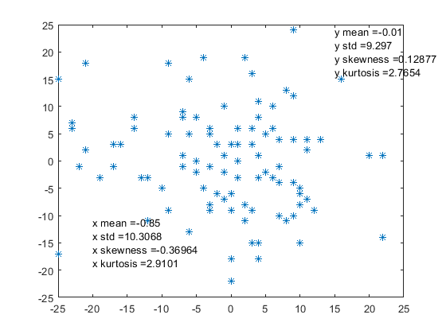
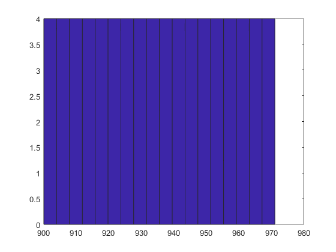
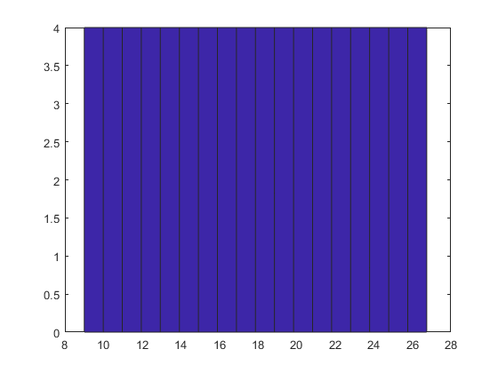
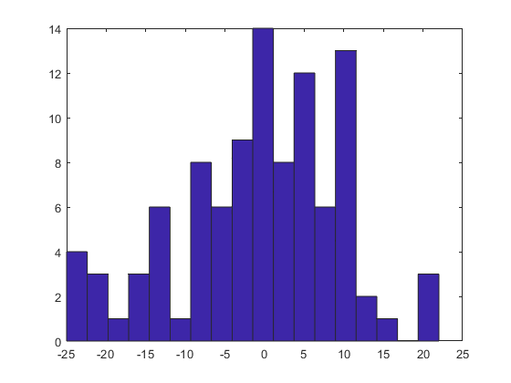
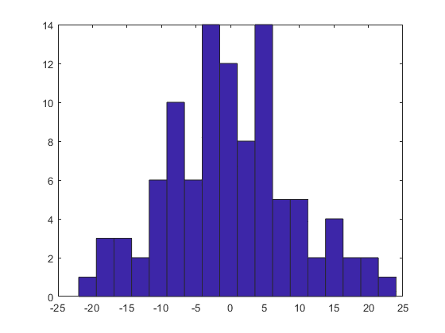

set1 = load('lab09dataset1.mat');
set2 = load('lab09dataset2.mat');
mx1 = mean(set1.x);
my1 = mean(set1.y);
mx2 = mean(set2.x);
my2 = mean(set2.y);
stdx1 = std(set1.x);
stdy1 = std(set1.y);
stdx2 = std(single(set2.x));
stdy2 = std(single(set2.y));
skx1 = skewness(set1.x);
sky1 = skewness(set1.y);
skx2 = skewness(set2.x);
sky2 = skewness(set2.y);
kux1 = kurtosis(set1.x);
kuy1 = kurtosis(set1.y);
kux2 = kurtosis(set2.x);
kuy2 = kurtosis(set2.y);
strx1 = {strcat('x mean = ', string(mx1)), strcat('x std = ', string(stdx1)), strcat('x skewness = ', string(skx1)), strcat('x kurtosis = ', string(kux1))};
stry1 = {strcat('y mean = ', string(my1)), strcat('y std = ', string(stdy1)), strcat('y skewness = ', string(sky1)) , strcat('y kurtosis = ', string(kuy1))};
strx2 = {strcat('x mean = ', string(mx2)), strcat('x std = ', string(stdx2)), strcat('x skewness = ', string(skx2)), strcat('x kurtosis = ', string(kux2))};
stry2 = {strcat('y mean = ', string(my2)), strcat('y std = ', string(stdy2)), strcat('y skewness = ', string(sky2)) , strcat('y kurtosis = ', string(kuy2))};
figure
plot(set1.x, set1.y, '*')
text(set1.x(3),set1.y(3)+10, strx1);
text(set1.x(10), set1.y(10)-5, stry1);
figure
plot(set2.x, set2.y, '*')
text(-20, -15, strx2)
text(15, 20, stry2)
figure
hist(set1.x, 18);
figure
hist(set1.y, 18);
figure
hist(single(set2.x), 18);
figure
hist(single(set2.y), 18);

    